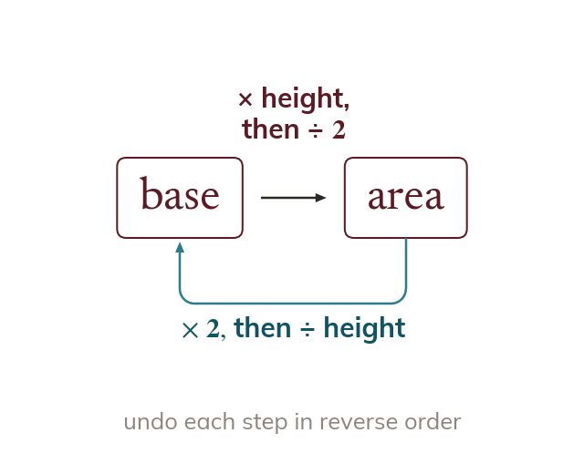

Running a formula backwards
Run an area formula backwards to find a missing length. For a triangle, base = area × ÷ height.
An area formula can be run backwards to find a missing length, undoing each step in reverse order. For a triangle, doubling the area and dividing by the height gives the base.